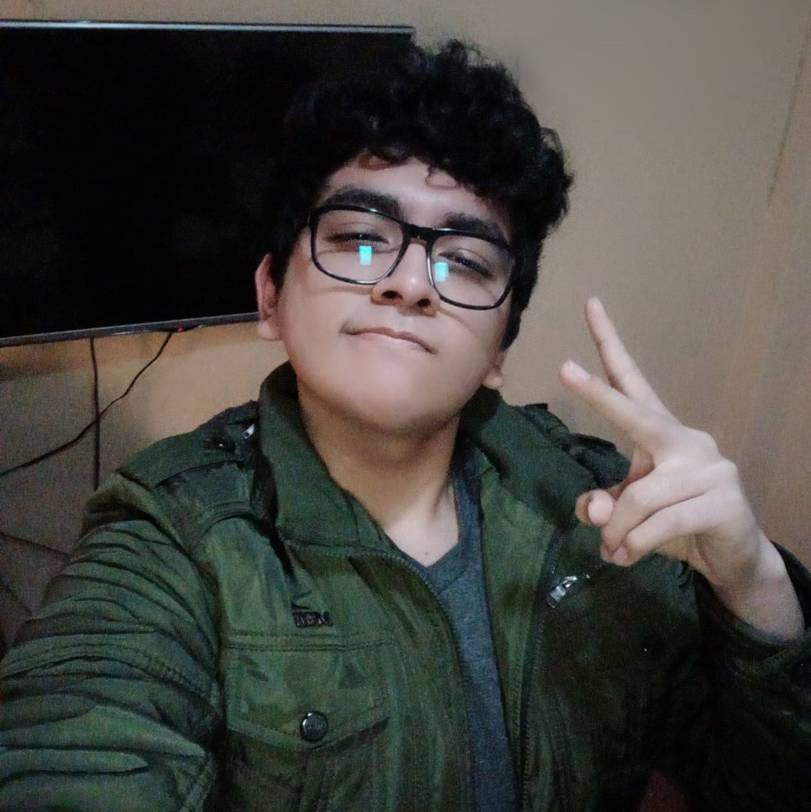
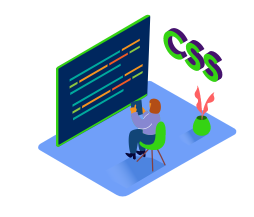
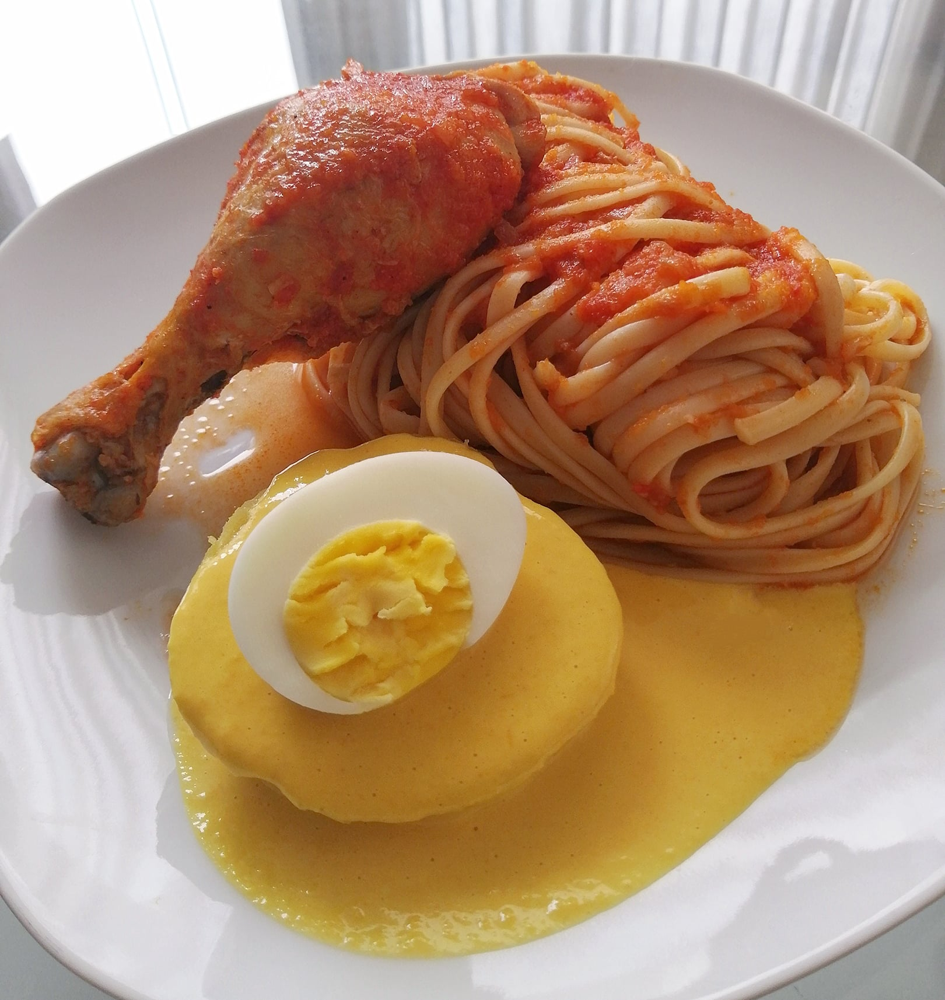

Actualmente tengo 20 años.

Vivo en el distrito de San Juan de Lurigancho-Lima.
Estoy estudiando la carrera de ingeniería de sistemas (octavo ciclo) en la universidad César Vallejo, campus San Juan de Lurigancho.

Lo que más me gusta de la carrera es la programación (en especial el desarrollo web), bases de datos y matemáticas.
En paralelo, estudio música en un taller de forma online.

Me considero una persona autodidacta, puesto que muchas cosas que se hoy en día, los aprendí por cuenta propia.
Mi plato favorito son los tallarines con papa a la huancaína.


Me gusta mucho cantar y componer canciones, tambien suelo tocar el piano, la guitarra y jugar videojuegos.